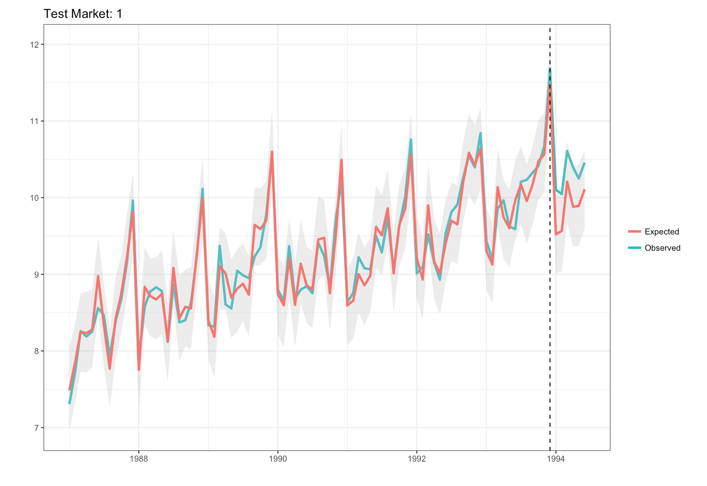

There are some really cool posts on this topic (see here and here to name a few).
Let’s get one thing out of the way: This method cannot reliably predict whether a stock will trend upwards or downwards. If it could, I would be not writing this post. In fact, I would’ve moved to Connecticut, opened a hedge fund, made a bunch of money, and then went directly to Dairy Queen and purchased every flavor of ice cream cake. Because that’s what we’d all do following a major cash windfall – buy/eat all the ice cream.
However, for certain series that exhibit a detectable pattern prior to trending up (down), methods like the one discussed herein can produce some pretty solid results in terms of classifying where a series will likely go in the future.
The data we’ll use is the historical daily closing prices for the stocks’ of all Fortune 500 companies. Let’s load up all the libraries and then pull down the list of companies from wikipedia.
library(BatchGetSymbols)
library(rvest)
library(Kendall)
library(broom)
library(MarketMatching)
url = "https://en.wikipedia.org/wiki/List_of_S%26P_500_companies"
data = url %>%
read_html() %>%
html_nodes(xpath='//*[@id="mw-content-text"]/table[1]') %>%
html_table() %>%
data.frame()
tickers = data[,1]
Now we have a vector of all 500 companies. This will serve as an input to the next part, which is collecting the historical daily closing prices for all of the stocks. The library to help us do it is BatchGetSymbols. Let’s specify a starting and ending date across which we’ll collect the closing prices. I picked 2015-01-01 and the 200 days following. One thing to note is that the stock market is closed on weekends and holidays, so it’s OK to have days missing (i.e., less than 200 days).
train_period_begin = as.Date("2015-01-01")
train_period_end = max(seq(train_period_begin, by = "day", length.out = 200))
stock_data_train = BatchGetSymbols(tickers = tickers,
first.date = train_period_begin,
last.date = train_period_end)
Everything worked. Now that we have our data, let’s go into a little more detail around how we’ll set this problem up. First, let’s revisit the original question: Can we take 30 days of closing prices and classify where the stock will trend (up, neutral|down) over the next 90 days. We’ve limited the number of classes in this example to 2 for the sake of simplicity.
The plots below illustrate what this looks like.
We’ll consider this our ‘training’ data set, even though we aren’t actually training a model. Take the first 30 days of each time series, and then add a label to each: postive or neutral|negative.